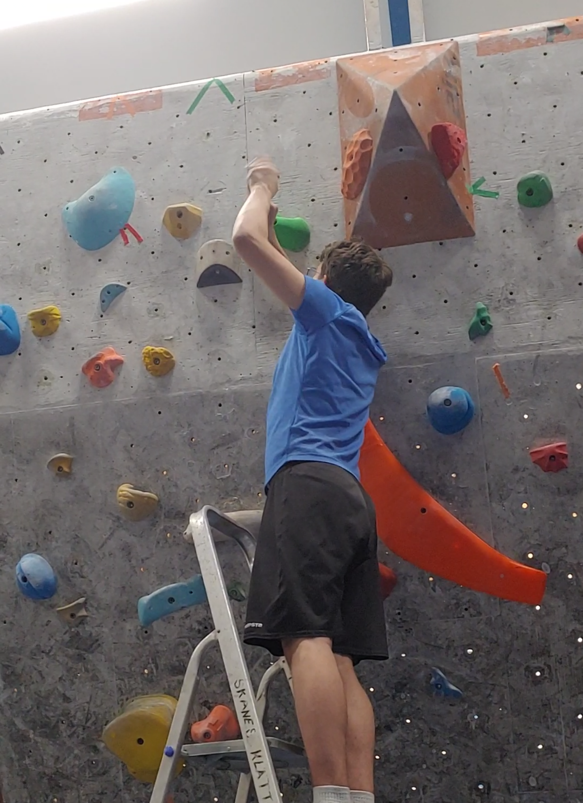

Hey! My name is Jake and I'm a 22 year old Canadian citizen currently living in Sweden. I graduated in 2023 with an HBSc in
mathematics and a minor in physics from Lakehead University and am currently pursuing a Master's in bioinformatics at Lund University.
I've always been passionate about math and science, especially when it comes to abstract ideas
and learning to link and apply these abstractions. For most of my life I've mainly been interested in pure math and physics but
I've recently taken a strong interest in machine learning and data analysis, and wanting to apply the math I've learned.
Throughout my life I've had many periods of being fascinated by different subjects, jumping from math and science to philosophy
and linguistics, all the way to dance and photography. I've always had a deep interest in music too, as I've played saxophone
and a smattering of other wind instruments for several years. In my free time I like to go rock climbing or play video or board games
with my friends, and while I'm no extraordinary chef, I do enjoy cooking and baking. Hover over (or tap on mobile) any of the images
below for more info.
A visit with a friend to the Grand Marais lighthouse in Minnesota.
Some volunteer gardening work assisted by Duke the blind (but brave) cat in western England.
One of many visits to and around the London Eye.
Walking to the Thunder Bay equestrian gymkhana, dressed for the part of course.
Kayaking for my first time in Ardèche.
Me and my lovely partner in crime, Célia, at Lac de Passy near the French-Italian border.
In front of the Eiffel Tower on my first trip to Paris.

Setting a boulder problem for a local climbing competition.